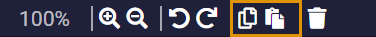
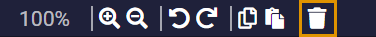

Moving the board
Moving the board is done by dragging with the left mouse button. To zoom in or out, use either mouse wheel, or the top menu controls.

Using components
To create a component, find it in the component menu and drag & drop it on board.

Copy/paste is done either through CTRL+C/V keyboard shortcut or with top menu controls.
Deleting is again done with DELETE key, or by clicking delete icon in top menu.
Connecting components
Every component has 1 or 2 ports.


Input port: On left side of a component, used to receive data from other component
Output port: On right side of a component, used to send data to other components
Only an output port can connect to input port, and only an input port can connect to output port.
There are components that can connect only to other specific components, to learn more about a component, you can click on the question mark icon of the component in component menu.
Component properties
Properties of component can be changed in the options menu. To learn what a certain property does, you can click the question mark next to the property name.

That is all for basic functions of Systemizer. You can also start onboard tutorial, or go designing right away.